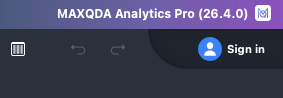
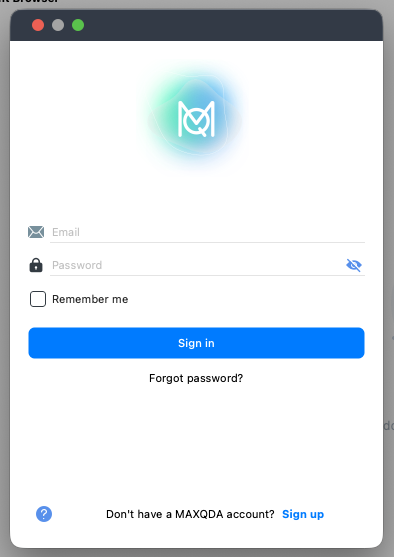
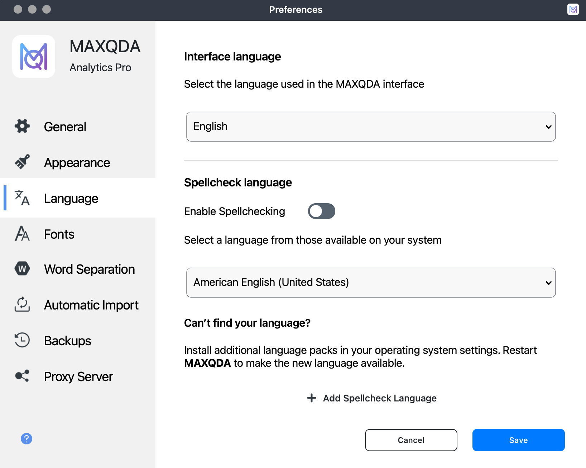
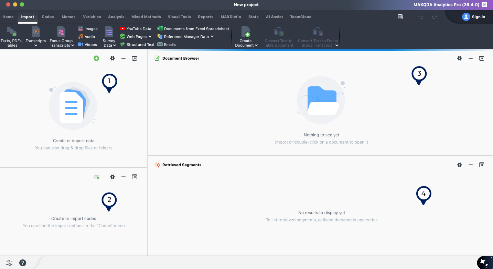

Setting up MAXQDA and Key Terms
Use the Illinois license to access MAXQDA
This section demonstrates how to use MAXQDA with the license provided by the University of Illinois Urbana-Champaign for current students, faculty, and staff.
If you’re not with the university, you can access MAXQDA by signing up for a free trial or purchasing your own license.
Downloand and install MAXQDA on your device
If you haven’t yet, download the MAXQDA program to you Mac or Windows computer. Follow the usual procedures for installing software on your device.
If you cannot, or do not want to install the MAXQDA software on your compute, you can use the University’s virtual desktop service Illinois AnyWare. This service lets you access a Windows desktop from your own device and use the software installed on that desktop without having to add them to your own device.
Set Illinois license information
Open the program. The first time you open MAXQDA on a new device, you will need to set the license information. You should see a screen (Figure 1) that says Welcome to MAXQDA and then asks you to choose a license option.
Click on the option that says Connect to your institution's network license
Enter Illinois license information
After you choose to make use of an institutional license, you’ll be prompted to enter the license details (Figure 2).
- In the first box asks for your institution’s server address. Enter:
maxqda.webstore.illinois.edu - Set the Port to
21990 - Make sure the radio button for the last box is checked and enter the license name
MAXQDA(all caps included). - Click
Connect
If you are working off-campus, you will need to be connected to the campus network via the Virtual Private Network (VPN). Once you have connected to the VPN, the steps for accessing MAXQDA remain the same.
Technology Services offers instructions for setting up the VPN.
Link a MAXQDA account (optional)
In addition to the network license, you may choose to log into the MAXQDA program with a (free) MAXQDA account. This account is not connected to your Illinois license, and you can use any email you prefer.
You only need to connect a license if you want to use the AI-Assist features (which is included in the Illinois license) or any of the other add-on features that can be purchased from MAXQDA, including automated transcription and Team Cloud tools.
To link a MAXQDA account:
- Create an account on the MAXQDA website.
- Look for the
Sign Inoption in the upper right corner of the program. (Figure 3 (a)) - Enter your account details. (Figure 1)


Set Interface Language (Optional)
MAXQDA’s interface is available in English as well as 12-additional languages.
Use MAXQDA > Preferences to open the preferences pane. Choose Language from the list of options on the left. Choose your preferred interface language from the drop down menu.

Key Terms
Interface elements
Once you are logged in you and created a new project (see Creating a New Project for more information), you will see the MAXQDA program itself. There are four different windows1 within the program (Figure 5) that you will need to know. MAXQDA uses specific vocabulary terms throughout the software to describe parts of a qualitative project and it will be easier to conduct your own research with a strong grasp of this language.
The four windows are:
- Document system: The data files you upload will be stored here.
- Code system: The codes you add to the project will be listed here.
- Document browser: This window displays the data document that you have selected.
- Retrieved segments: This window displays the data at the intersection of activated documents and codes. See more on activation.

Activation
MAXQDA uses activation2 to help you focus on a subset of the data at the intersection of the activated codes and data documents. Once you have activated both data and code(s), you will see the matching data in the retrieved segments window.
How would you use activation to analyze qualitative data?
For a set of data with with interviews and teachers about school-family communication, we have coded the interview data with examples of positive communication experiences:
- Activate the documents for teachers
- Activate codes related to positive communication
The retrieved segment window would then show us just the data that meets those two conditions.
We might then change the document activation to focus on parents instead.
By comparing the two sets of retrieved segments, we can start examining whether there are differences or similarities in how these two groups see positive school-family communication.